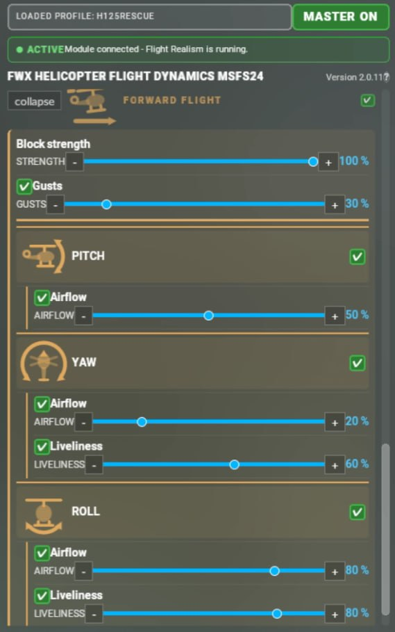
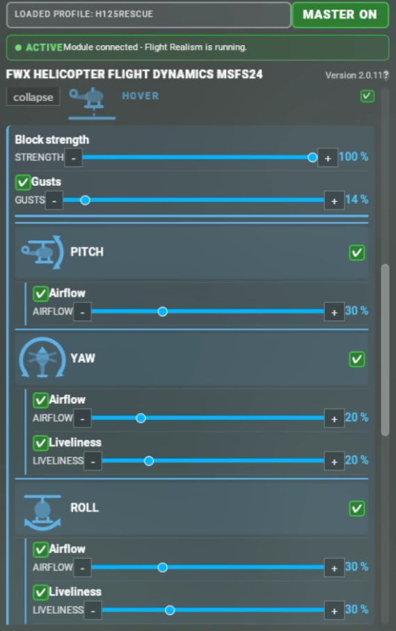
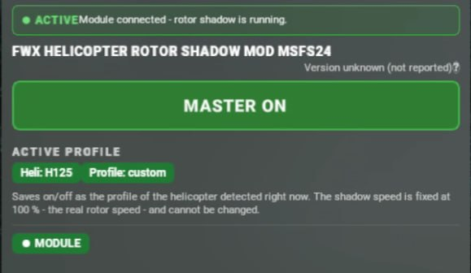
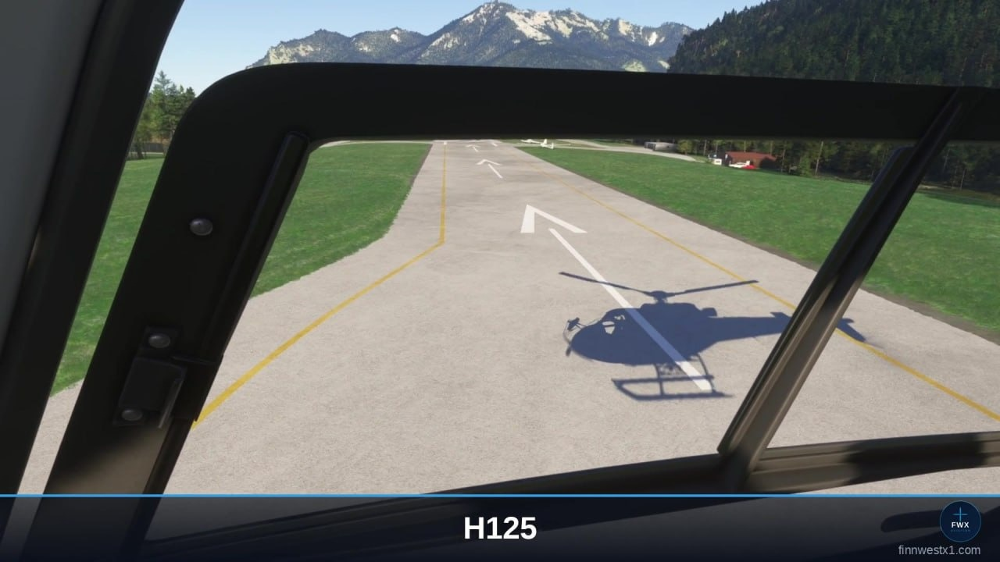
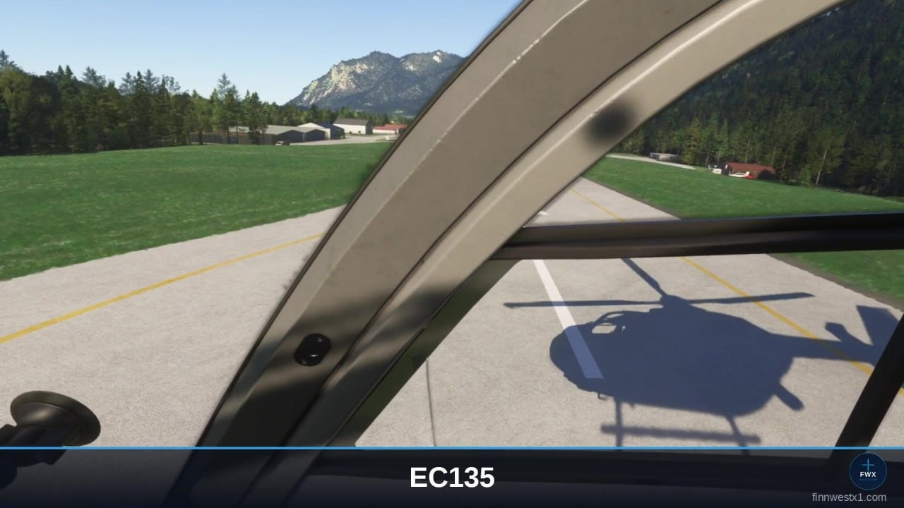
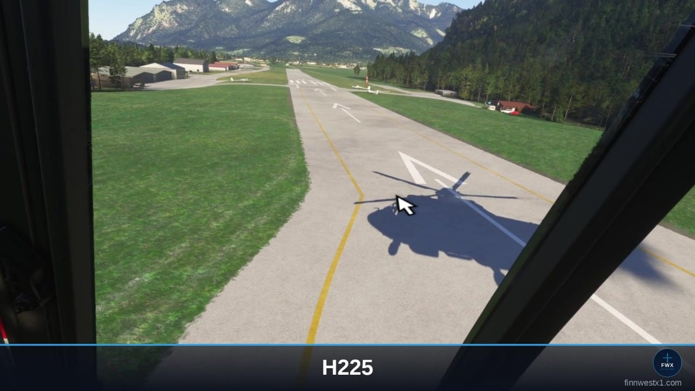
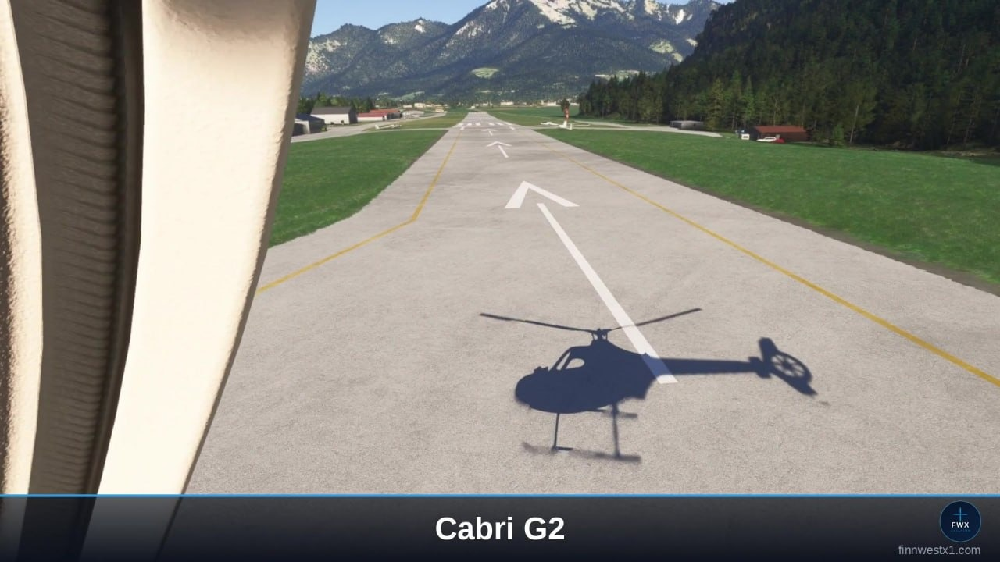
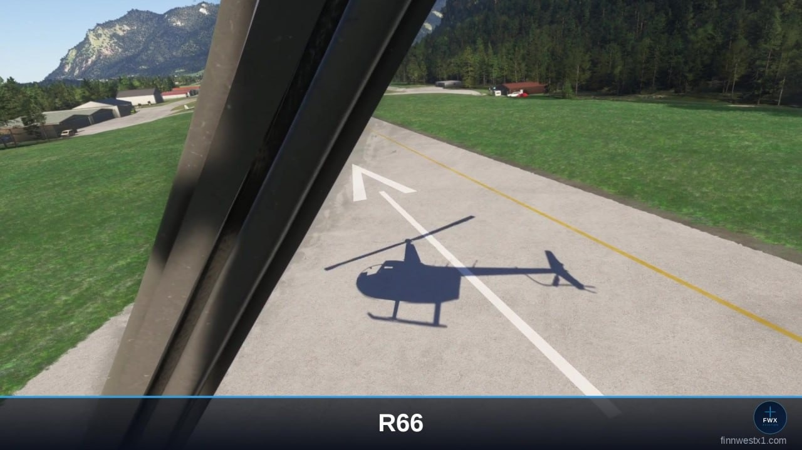
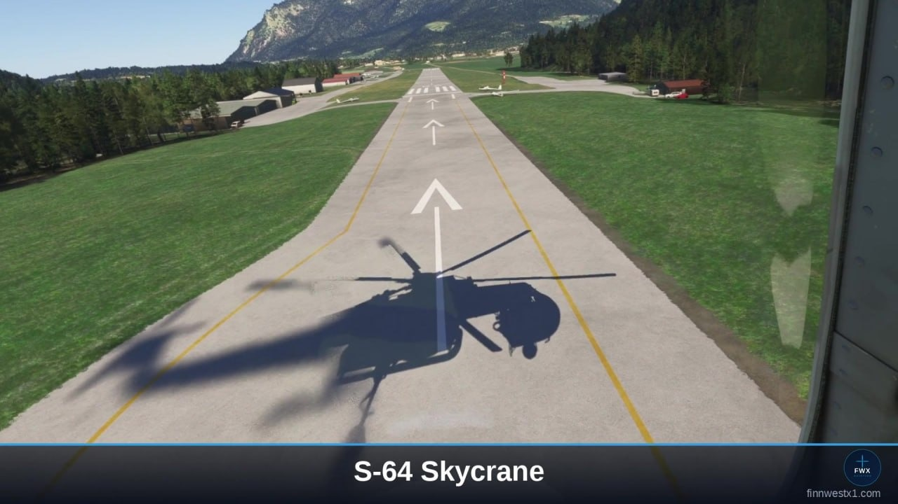
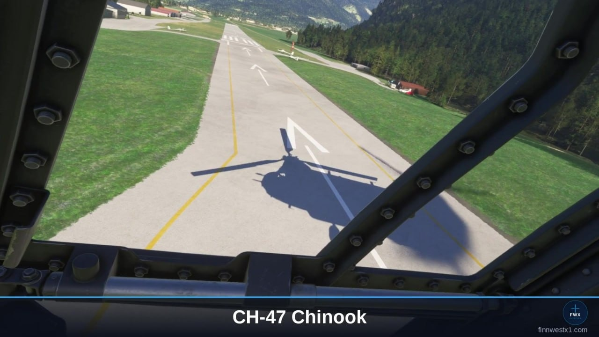

FWX Heli Flight Dynamics & Rotor Shadow.
for Microsoft Flight Simulator 2024
This helicopter package: at its core a substantial new add-on for the flight dynamics. A game changer we are very proud of. Not a camera effect! The helicopter itself flies noticeably more realistically. The flight model of the simulator stays in force; our technology gives it additional movement characteristics.
Included in the package: a unique and perfected rotor shadow technique, as an addition for the seven models in the simulator known for it. This package is therefore for every helicopter pilot in MSFS 2024.
From the makers of the FWX EC135 Sound Mod, reviewed by SimFlight, Threshold and MSFS Addons.
Who this is for
If you already own one of our mods, you know the FWX Control Center - every FWX product installs it. In it you have seen the two locked tabs: Flight Dynamics and Rotor Shadow. This package unlocks exactly those two - and nothing you already paid for is in it a second time.
It is just as much for anyone who wants these two add-ons and needs neither the sound nor the haptic alongside them. What you get is the same Flight Dynamics and the same Rotor Shadow, in the same Control Center.
Flight Dynamics - what it does
The flight dynamics are the heart of it. What they do:
- In the hover the helicopter no longer holds itself. It “lives” under the pilot and wants to be flown …
- The same applies to flight in motion. First there is a seamless transition into forward flight. The movement itself, in whatever direction, is treated the same way by our system. Both the live aerodynamic influences and the influences of the pilot become clearly noticeable. That makes the whole thing more alive and more immersive from the ground up.
- Everything can be personalised in detail by the customer.
- What moves the helicopter arises continuously from the simulator's real-time flight data plus the pilot's control inputs in the very same moment. Nothing is pre-computed, nothing is played back. Everything happens live.
- Every helicopter type has profiles that can be saved and is configured conveniently inside the simulator itself via the toolbar. No settings outside the sim are needed. The standard types come with a tested preset. The default values can be set individually by the customer to their own needs for any third-party helicopters and saved.
- This applies to every helicopter in MSFS 2024, not just to a single type.
The order behind it is built deliberately: the simulator calculates. Our technology passes additional data to the flight behaviour. Important here: we do NOT replace the flight model of the simulator. It stays fully in force and keeps calculating as intended. Our technology reads what arises there and adds additional movement components. Everything is carried out by the simulator itself. The original stays untouched, so there is no overwriting of the original simulator values. The simulator processes this and outputs the flight behaviour accordingly.


Works with other add-ons
Third-party camera tools put their own values on top undisturbed. We do not touch the camera. Anyone flying with ChasePlane and/or FS Realistic therefore carries on exactly as before: those two act on camera and sound, we act on the flight behaviour underneath. For many sim pilots ChasePlane and FS Realistic are part of the basic kit. That is precisely why it mattered to us that our package runs alongside them without any restriction.
The panel
Everything is operated in one place inside the simulator, through the toolbar. You open the FWX Control Center in mid-flight: one tab per add-on, a master switch at the top, the settings below it. Every change takes effect at once, without a restart. No second window that has to run alongside, and nobody has to leave the flight to change something.
In VR in particular this pays off. With a headset on you cannot operate a window next to the simulator without taking it off. With us you do not have to: the panel sits inside the simulator and is therefore reachable with the headset on. Setting things in flight, without leaving the flight. In classic 2D it is a fine thing too, because no external Windows application has to be operated from outside.
Rotor Shadow
Briefly on the rotor shadow: a rotor turns above the pilot, and on seven known types its shadow in the simulator disappears completely, at different points, from a certain rpm upwards. So it is there at first and then suddenly gone after start-up. It is exactly these seven that our rotor shadow mod gives the shadow back to, at live rotor speed; all the others have their shadow anyway.
The seven types:
- Airbus H125
- Airbus H135 (EC135)
- Airbus H225
- Guimbal Cabri G2
- Robinson R66
- Sikorsky S-64 Skycrane
- Boeing CH-47 Chinook

Rotor Shadow in pictures
All seven supported types, photographed in the simulator with the add-on running - the rotor shadow is there at full rotor speed, where the simulator on its own draws nothing.







What it does not do
- We do NOT replace the flight model of the simulator. It stays fully in force and keeps calculating as intended.
- We do not touch the camera.
- Rotor Shadow works on the seven types listed above only. All the others have their shadow anyway.
- It works on helicopters, not on airplanes.
- There is no haptic module and no sound mod in this package. Those are separate FWX products.
Compatibility
- Microsoft Flight Simulator 2024. PC, Steam or Microsoft Store. MSFS 2020 is not supported.
- Windows 11. Not available on Xbox, which cannot install third-party add-ons.
- Flight Dynamics: any helicopter in the simulator.
- Rotor Shadow: the seven types listed above.
- No extra hardware. Whatever controls you already fly with are enough.
Get it
This package is available here on finnwestx1.com only. It is not available on SimMarket - it was put together for customers who already own the FWX Haptic Mod, the Sound + Haptic Bundle or the Sound Mod, and should not have to pay for anything twice.
Something still unclear?
Email Finn.West@gmx.net and I will answer personally. Usually under 24 hours.
Contact & support →